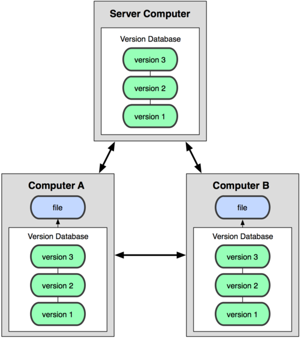
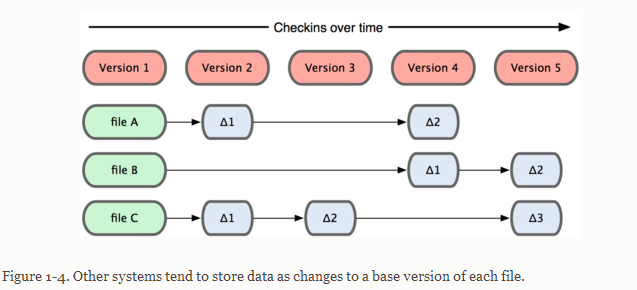
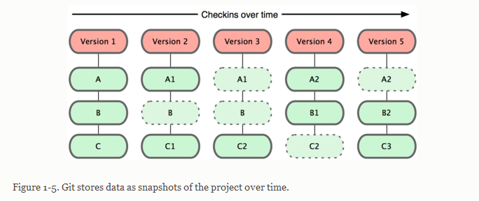
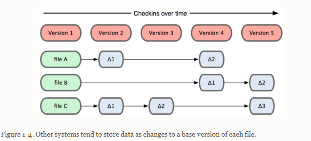
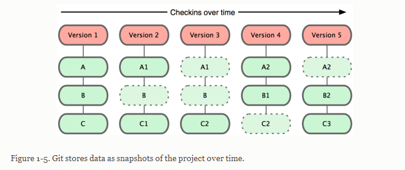
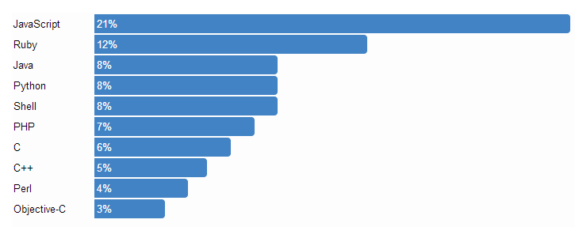
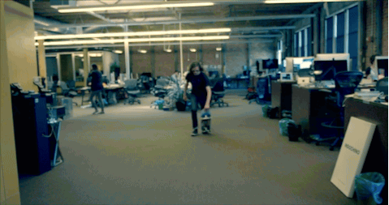
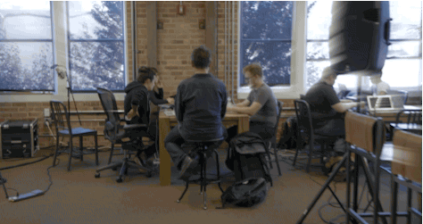

Git设计目标
- 1,速度快 Speed
- 2,简单 Simple design
- 3,很强大的并行支持 Strong support for non-linear development (thousands of parallel branches)
- 4,完全分布式 Fully distributed
- 5,能够高效的处理很大的项目（比如linux内核） Able to handle large projects like the Linux kernel efficiently (speed and data size)
集中式和分布式代码管理
 |
 |
Git特性
1、Git存储快照，而非新旧文件的差异  
1、Git存储快照，而非新旧文件的差异  
Git特性
2、几乎所有的操作都在本地完成。
3、文件校验，SHA-1
4、Git上所有的操作，通常都是增加数据到Git的数据库里。
Git特性
- 5、文件有三种状态：modified，staged，committed
安装git
Linux:
source安装，或者yum install git-core（apt-get install git）
Mac:
http://code.google.com/p/git-osx-installer或者
$ sudo port install git-core +svn +doc +bash_completion +gitweb
Win:
http://msysgit.github.com/
git命令
- git init
- git add [file]
- git commit
- git push
- git pull
- git fetch
- git merge
GitHub
GitHub 是一个用于使用Git版本控制系统项目的共享虚拟主机服务。它由GitHub公司（曾称Logical Awesome）的开发者Chris Wanstrath、PJ Hyett和Tom Preston-Werner使用Ruby on Rails编写而成。
只要你的代码是开源的，就可以免费使用github的服务，并且空间是无限制的。
GitHub
GitHub的网站设计十分简洁实用。并且功能强大，有一系列的图表监控代码的行踪，还有wiki、issues bug跟踪、可以直接在网站更改代码等等。GitHub 同时是一个有社交功能的开发者社区。
越来越多的开源软件都开始使用github托管，比如rails，jquery，node
还有淘宝支付宝，豆瓣等等国内一些公司的开源项目也都托管在这里。
GitHub
github pages，github提供免费的静态主机你可以用jekyll生成静态页面，创建自己的博客 或者直接用issues写博客 大家猜猜GitHub上使用最多的编程语言是哪种？
GitHub上的top10编程语言

Thanks

